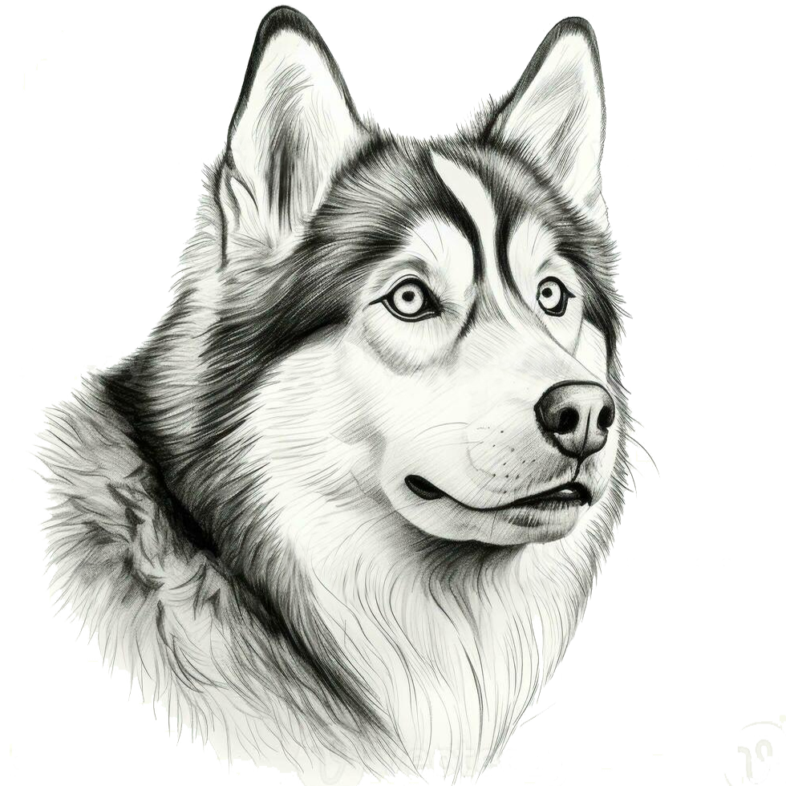

SIB. HUSKY
Siberian Husky, a thickly coated, compact sled dog of medium size and great endurance, was developed to work in packs, pulling light loads at moderate speeds over vast frozen expanses. Sibes are friendly, fastidious, and dignified. The graceful, medium-sized Siberian Husky's almond-shaped eyes can be either brown or blue'¿and sometimes one of each'¿and convey a keen but amiable and even mischievous expression. Quick and nimble-footed, Siberians are known for their powerful but seemingly effortless gait. Tipping the scales at no more than 60 pounds, they are noticeably smaller and lighter than their burly cousin, the Alaskan Malamute. As born pack dogs, they enjoy family life and get on well with other dogs. The Sibe's innate friendliness render them indifferent watchdogs. These are energetic dogs who can't resist chasing small animals, so secure running room is a must. An attractive feature of the breed: Sibes are naturally clean, with little doggy odor.
 Sheperd
Sheperd Retriver
Retriver